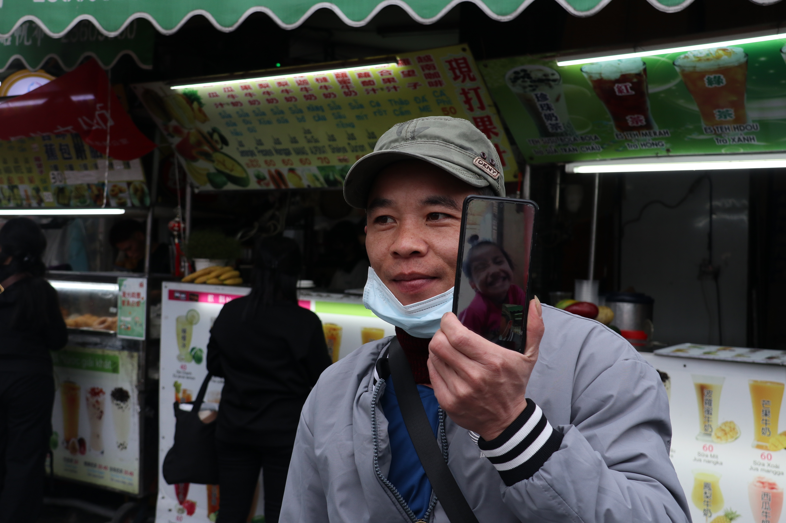

2024年三月四號，星期六，在東協廣場。
一個對我們而言近似奇蹟的畫面在眼前上演，聽來或許煽情，但至今回想起那一幕，仍感慨萬千。在擬定封面、拍攝前，我們會大略在腦中構想畫面的模樣，怎樣指引受訪者拍攝，讓畫面呈現最佳的訊息傳遞效果；每次的拍攝都像一場賭注，需要靠老天賞飯吃。良好的光線、與主題契合的主角，一張好照片要能說故事，可遇不可求。
在拍攝前，我們在日曆紙上，繪製了粗略的草圖。希望能拍攝出一張「想念遠在異國兒女的父母」照片，來表達外籍移工對家鄉兒女的思念。即使多數人對移工的認識不深，但對於他們酷愛在外視訊的特色應該很熟悉，我們想著，畫面裡應當要有手機、視訊的畫面，還要有小孩的身影。
但茫茫人海中，該怎麼找到一個符合所有條件的對象?難道我們要直覺鎖定目標，請求他/她，並說:「嘿，請問你有小孩，剛好不在身邊，你可以跟他視訊，並讓我們拍一張照嗎?」說不定還高攀了賭注。
就這樣陷於自我懷疑，一名男子從我們身旁經過，正在講電話，他的手機殼背後是一張小女孩的相片。手持電話的異國男子，講著我們不了解的語言，手機背後女兒的照片，這個畫面一下就觸動了我們，因為他就是我們理想中的主角。就這樣，從月曆紙上躍出。
他和他的妻子在一起，妻子說著一口流利的中文，她說手機殼背後的圖案是他的女兒，今年3歲，跟祖父母同住在越南，而他和妻子一同在台灣工作打拼。
我們詢問他，有沒有機會為他拍張照，他很爽快的答應了，我們問，有沒有機會能夠與女兒一同視訊，我們想要為他和女兒拍攝一張「合照」。
他笑了笑，是錯愕又得意的笑，錯愕來自這突如其來的請求；得意的是能夠讓我們看看他的寶貝女兒，他也很高興呀。

他開啟了視訊，我們見到了照片上的那個小女孩，活蹦亂跳的身影出現在螢幕上，畫面上的女兒緊緊依偎在父親的臉頰旁，像在親吻一樣，看起來好近、但也好遠。
我們看著父親望著女兒的神情，滿滿的愛、思念、自豪甚至是憐惜——至今仍難以忘懷。
請剛認識的受訪者為我們開啟視訊，這個任務看似魯莽，但顯著展示了一個問題：在這片島嶼上，到底有多少的父母親，與孩子分開，在異國打拼呢？